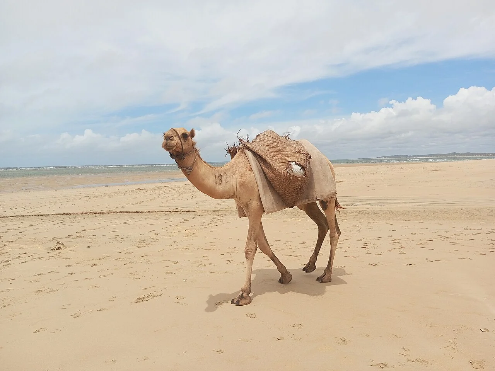

Shela Beach — Lamu
Île de Lamu, Kenya · baignade

Plage de sable blanc de 12 km sur l’île de Lamu, au Kenya, bordée de hautes dunes selon Rough Guides. Lonely Planet la dit assez vaste pour qu’on y trouve un coin isolé en marchant un peu. Le village de Shela, derrière la plage, a une mosquée du vendredi de 1829 et son minaret de 18 m. En décembre et janvier, la mer est à 28 °C et 27,5 °C en moyenne (Climats et Voyages).
- Lieu
- Île de Lamu, Kenya
- Niveau
- Variable selon les conditions
- Activités
- baignade
- Type d'eau
- Mer / océan
- Coordonnées
- -2.29, 40.92 (position approximative du secteur)
Dangers à connaître
- Forts courants d’arrachement par endroits, surtout autour de l’hôtel The Fort (Lonely Planet).
- Le chenal de Shela (Mlango wa Shella) est l’un des « chenaux tueurs » de Lamu, aux courants violents et aux fortes vagues (Daily Nation).
- Daily Nation rapporte des noyades à Shela, dont celles de trois membres d’un groupe d’église en sortie.
Le conseil d'Ocean Buddy
Avant de nager, demande conseil sur place : Lonely Planet signale de forts courants, surtout près de l’hôtel The Fort.
Ouvrir dans Ocean Buddy Télécharger sur l'App Store
Source : Fiche Ocean Buddy · décembre 2026 · d’après Lonely Planet, Rough Guides, Daily Nation et Climats et Voyages · à vérifier localement.